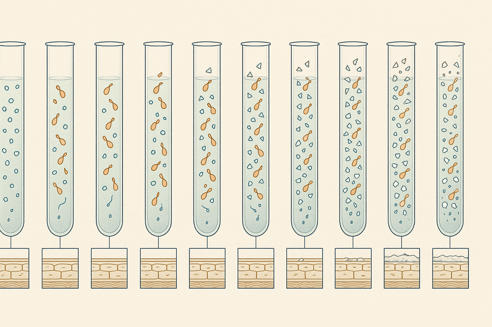
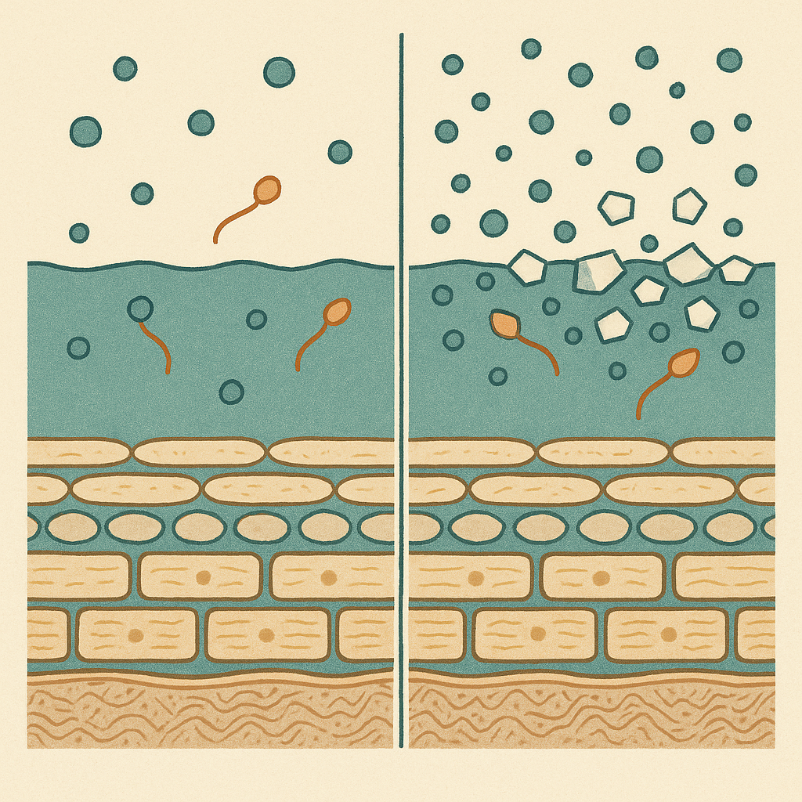
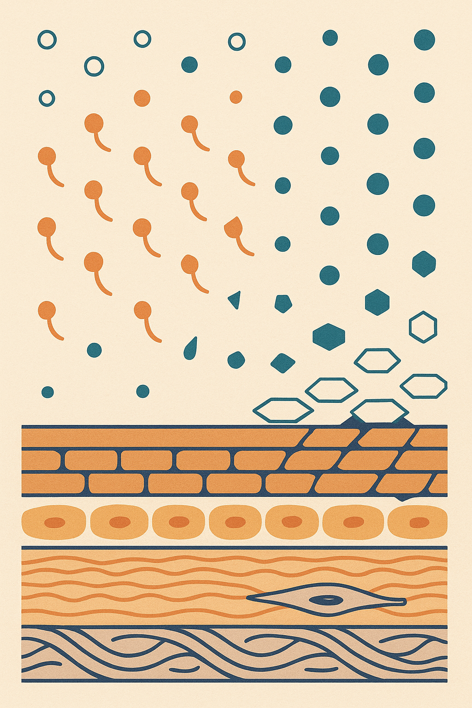

Review below. Reply approve to publish the Facebook post, or tell me edits.

TL;DR. Hard water is dissolved calcium and magnesium. Those minerals react with the surfactants in most foaming cleansers and leave part of the cleanser stuck on your skin instead of rinsing away. That residue, not the mineral, is what makes skin feel tight and squeaky. Hardness varies enormously between Australian supplies, so the same cleanser genuinely behaves differently in different postcodes. The fixes are free: rinse properly, cleanse for less time, favour low-foam formats, moisturise on damp skin.
Everyone audits the ingredient list on the bottle. Almost nobody audits the litre of water they mix it with twice a day. In Australia that water is not one product, it is roughly eight, and the difference between them changes how the exact same cleanser behaves on your face.
Short answer: it does not cause it, but it can make an ordinary cleanse behave like a harsher one.
Hardness is simply dissolved calcium and magnesium, picked up from rock and soil on the way to your tap. Utilities report it as milligrams per litre of calcium carbonate. That is the whole definition.
It has nothing to do with chlorine, nothing to do with taste, and nothing to do with whether the water is clean. Hard water is perfectly safe to drink. It is a chemistry variable, not a purity one. That matters, because it is the chemistry your cleanser has to work inside.
Most foaming cleansers are built on anionic surfactants: cleansing molecules that carry a negative charge. Calcium and magnesium ions carry a positive charge. Put opposite charges in the same basin and some of the surfactant reacts out of solution into an insoluble film.
You have already seen that film. It is the chalky ring on a shower screen and the scum line in a bath. It is not dirt. It is soap that never rinsed away, it simply changed state.
Said plainly: in soft water the surfactant leaves with the water. In hard water some of it stays on you.
This has been measured directly rather than assumed. Danby and colleagues washed skin in hard water and in the same water softened, and found the hard-water wash left significantly more surfactant deposited on the skin, along with more irritation. Softening the water reduced the deposition.
That direction matters: the mineral is not the irritant. The mineral is what stops the irritant leaving.
That reframes a very common complaint. Skin that feels tight, squeaky and faintly sensitised after washing is often not reacting to a harsh formula at all. It is reacting to a perfectly ordinary formula that never fully left the surface.
Healthy skin sits acidic at the surface, roughly pH 4.5 to 5.5, and that acidity is functional rather than incidental. It governs the enzymes that assemble barrier lipids and shed dead cells, and it helps keep the surface microbial community stable (Ali and Yosipovitch, 2013).
Alkaline residue nudges that surface upward. It does recover. It just recovers a little slower each time you re-run the cycle, which is why the effect tends to show up as a pattern over weeks rather than as one obviously bad wash.
This is where most articles about water overclaim, so here is the ceiling.
Perkin and colleagues found an association between domestic water hardness and eczema in infants in a large population study. A 2021 systematic review and meta-analysis (Jabbar-Lopez and colleagues) found that association held up across studies, but also that softening the water did not reliably improve eczema once it was already established.
Read correctly, that says hardness looks like a barrier stressor and a modifier, not a cause, and that a water softener is not a treatment. It also means you should not stretch the eczema literature into "hard water gives you wrinkles". Nobody has shown that, and anyone claiming it is selling something.
Hardness varies enormously by supply, and it is public information. Every utility publishes an annual drinking water quality report with the mg/L figure in it, and that report, not a general rule of thumb, is the number you want.
Generally, capitals fed by protected surface catchments sit at the soft end. Melbourne's reported hardness typically lands somewhere around 10 to 20 mg/L, which is very soft water by any standard. Hobart, Sydney and Canberra sit in similar territory. Brisbane generally sits in the middle. River-fed and groundwater-fed supplies sit considerably harder: Adelaide is commonly reported in the 100 to 200 mg/L range and sometimes above it depending on the treatment plant and the season, with Perth, Darwin and most bore-water regional towns also at the harder end.
Treat those as orders of magnitude, not gospel. The point is the size of the gap. A tenfold difference in dissolved mineral is not a rounding error, it is a different washing chemistry.
That is also why your friend's advice may not travel. It explains a surprising amount. Why a cleanser that suited you for six years turned squeaky and tight after an interstate move. Why the routine your sister swears by lands differently at your place. She is not wrong. She is washing in different chemistry.
Before you replace a single product, change the variables that are free.
Reduce contact time. Twenty to thirty seconds of cleanser, then rinse properly and thoroughly. Most post-wash tightness is under-rinsing, not under-cleansing.
In hard water, favour low-foam formats. A non-soap cleanser (often labelled a syndet, meaning it is built on synthetic detergents rather than true soap), a cream or a cleansing oil sidesteps the problem, because the lime-soap reaction is specific to anionic surfactants.
Stop double cleansing by default. It is a step for makeup and sunscreen days, not a daily law.
Rinse cooler and pat dry. Do not scrub at residue. Friction is a second stressor stacked on the first.
Moisturise on damp skin, ideally within about three minutes, while the surface is still holding water.
As for shower head filters: optional, largely unmeasured for skin outcomes, and considerably more expensive than the five changes above, which do more.
The most common reason a routine "stops working" is not the routine. It is a variable nobody was tracking. Water is the biggest unlisted one, and it changes with your postcode.
None of this is a job for a light therapy device. Cleansing chemistry is its own problem, and it is solved at the tap.
Look up your own city's hardness figure and tell us in the comments if it explains something.
If you ever want a closer look at the gentle-daily end of skin care, our face and neck mask (a cosmetic device, not medicine) is here.
<!-- IMAGE NOTE (do not regenerate this plate, flaws logged for next time): outer tubes and insets are sliced by the frame; surface corneocytes are drawn with nuclei (stratum corneum must be flat and anucleate); no lipid lamellae or basement membrane; dermis rendered as wood grain rather than woven collagen; residue only appears in the last three insets instead of building monotonically. -->

The ingredient you use most of every day is not on any label: your tap water.
That chalky ring on your shower screen? A version of it is forming on your face.
And Australia is not one water. Hardness varies hugely by supply, so the same cleanser genuinely behaves differently by postcode. Comment your city and I will tell you where its water lands on the hardness scale.
Here is the chemistry. Hard water carries dissolved calcium and magnesium, and those positively charged minerals react with the negatively charged surfactants in most foaming cleansers. Part of the cleanser precipitates and stays put instead of leaving with the rinse. Researchers have measured it (Danby et al., J Invest Dermatol 2018): washing in hard water left more surfactant behind on the skin, and more irritation with it, than the identical wash in softened water.
So that tight, squeaky feeling afterwards is often not a sign your cleanser is too strong. It is a sign that a portion of it never actually left.
Protected-catchment capitals like Melbourne and Hobart sit soft. River-fed and groundwater-fed supplies, and most bore-water towns, sit much harder. Your water utility publishes the figure in its annual drinking water quality report. Save this so you can check your own city's report later.
Three free changes that beat buying anything. Cleanse for 20 to 30 seconds and rinse properly (most tightness is under-rinsing). Skip the automatic double cleanse on days with no makeup or sunscreen. Moisturise on damp skin within a few minutes.
One honest caveat: hardness looks like a barrier stressor, not a cause of anything, and a water softener is not a skin treatment. Do not let anyone sell you one as such.
Curious how many of you have noticed your skin change after moving states? Comment your city and I will tell you where its water lands on the hardness scale.
#skincare #skinbarrier #australianskincare #hardwater
**First comment:** Nothing to buy here, it is a rinse habit. If you ever want a closer look at the gentle-daily side of what we do, it is here: https://redermis.com.au/products/red-light-therapy-face-neck-mask

Your cleanser might be fine. Your water might not be.
Hard water carries dissolved calcium and magnesium.
Most foaming cleansers run on surfactants with the opposite charge.
Put them together and part of the cleanser precipitates into an insoluble film. Same reaction as the chalky ring on the shower screen.
That film is not minerals sitting on your face. It is cleanser that never rinsed off.
In a 2018 clinical study, the same wash in hard water left more surfactant behind on skin, and more irritation, than the same wash in softened water.
Which is why "tight and squeaky" is often under-rinsing, not a cleanser that is too strong.
And Australia is not one water. Protected-catchment cities sit soft. River and bore-fed supplies sit much harder. Your utility publishes the number, it takes about a minute to find.
Free fixes: 20 to 30 seconds of cleanser then a proper rinse, drop the automatic double cleanse, moisturise on damp skin.
Honest caveat: this is a barrier stressor, not a cause, and a water softener is not a treatment.
Save this if you have ever moved and blamed your skincare.
Drop your city below and I will tell you where it lands on the hardness scale.
Nothing here is a light therapy problem. Gentle-daily is the whole idea behind what we make. Link in bio if you want a closer look (cosmetic device, not medicine).
**Hashtags:** #skinbarrier #hardwater #cleansing #skincareaustralia #skincareeducation
**Title:** Why the same cleanser feels squeaky in one Australian city and soft in another
**Description:** Same cleanser. Different water. Different result. Hard water carries dissolved calcium and magnesium (Melbourne generally sits near 10-20 mg/L, Adelaide commonly 100-200 mg/L), and those minerals bind with cleanser surfactants and leave a fine residue on skin. That is why one routine can feel squeaky in one city and soft in another. Tight after washing? Try a low-foam cleanser, 20 to 30 seconds of contact, a cooler rinse, and moisturiser on damp skin. Pin this for your next skincare reset.
**CTA:** If you want a closer look at the gentle-daily side of skin care, our face and neck mask (a cosmetic device, not medicine) is here: https://redermis.com.au/products/red-light-therapy-face-neck-mask
**Pin link:** the blog article, "Hard Water and Skin: Why the Same Cleanser Behaves Differently in Every Australian City".
**Hashtags:** #skincaretips #hardwater #skincareroutine #skinbarrier #skincareaustralia
**Image:** reuses the Instagram image (instagram.png), generated at 1024x1536 (2:3 vertical), which is Pinterest's native vertical ratio. No separate Pinterest image is generated.